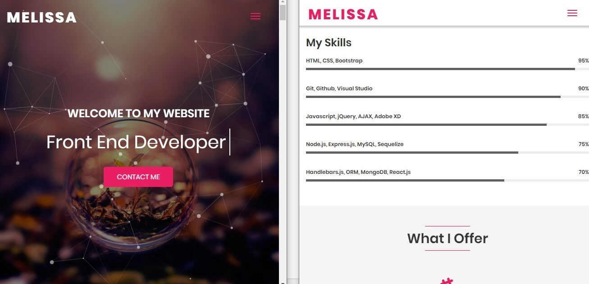

Blogs
The Industry

Being a woman in the technology industry
Being the woman in tech industry gives you all sorts of feelings innovative to lonely. This is one reason why I questioned myself in the first year of my Website development course “Why am I doing the male based course? or why aren't there more women?”, I think the reason for these questions was clear because there were only 3 female fellow students including myself in a course full of boys/male students. Sometimes the gender split can make huge difference on your learning experience. However, that didn’t stop me from undertaking what I wanted to achieve in fact It made me feel strong, proud and unique. Here I am now in my final year compeleting my degree and I am looking forward to make changes in the tech industry by being the ‘tech woman’ and looking to inspire the new generation.
My inspirationDuring my second year I was inspired by successful females in technology industry such as Laura Soutar, who is a Software Engineer, Civica Digital. As I searched up ‘Being woman in the technology industry’ Laura’s blog showed up where she has effectively written here story of being the woman in technology and how she has made her way through and how that changed her and how she sees the world. Laura say’s “we should highlight more women in the media and education system so that they can act as role models” (Open Access Government, 2019), here she is speaking on encouraging the women and women's rights in the industry, more females we encourage to take a step forward, more mentors we have for the young girls to be inspired and lead. Women's rights in the industry like maternity leave and financial support or a female wanting to start a family while continuing to work, these have small changes have already taken part in many countries which is good news but in the technology industry I believe we need to bring paternity benefits up to scratch and this is my aim in the industry development.

Laura Soutar's website (2019).
Industry statistic
4.3 billion internet users Globally, approximately 1.94 billion active websites in the world, even the small businesses have websites reached 64% in 2019, 66 percent of people prefer to read beautifully designed content, mobile devices account for nearly 2 of every 3 minutes spent online and 90% of people use multiple screens sequentially (Tech Jury, 2019). All these facts are representing the importance of website developers and designers in the tech industry. The industry is developing, and we have a new generation stepping forward with great new ideas. 64% of the smaller business decided to grow their business online by developing a website, of course the website makes a huge difference to a business and many organizations started from a small online business to a worldwide known manufacturer.
My future careerAs a website development student, I am looking forward to my future career in the Tech industry in this country because the “UK tech scaleup investment makes up 80% of total tech investment in the UK. This puts the UK in a strong international position to continue creating tech unicorns, and driving job creation up through high growth company activity” (Tech Nation, 2019).
Employment in the cityAccording to the Tech Nation report “The recent growth rate for London tech scaleups at 56% makes the cluster first in the world for scaleup growth” (Tech Nation, 2019). Which means there is a higher chance for people living in London to get the positions and for people like myself living in Manchester might have to move to London to achieve the success. This affects me as an individual who is not planning to move out to another city as this could disturb my family life. However, in the future approximately in few years I believe I can look up for a change in the industrial growth rate in Manchester, because Manchester is a city of students and new talented employees and graduates connected to technology industry will soon make the change, as we all are striving for growth and success.
Reference:
Tech Nation. (2019). UK Tech On The Global Stage. [online] Available at: Website Link [Accessed 28 Oct. 2019].
Tech Nation. (2019). UK Tech On The Global Stage. [online] Available at: Website Link [Accessed 28 Oct. 2019].
Tech Jury. (2019). TechJury: One-stop Tech Guides & Product Reviews. [online] Available at: Website Link [Accessed 28 Oct. 2019].
Open Access Government. (2019). Insights: Being a woman in the technology industry. [online] Available at: Website Link [Accessed 28 Oct. 2019].
Building my portfolio
This portfolio is not only representing my work and experiences it is also personifying me, the users of this website must recognise how professional is the developer of the website.
Research
In my research I have used google search and GitHub to find the specialized portfolios from the most experienced people. During my research I made a list of the things and unique ideas I liked in different portfolio sites which I could also code to include in my site or come up with something unique such as creating a different flow in each section.
Inspiration and IdeasOne of the portfolios in my research I have adored is from GitHub of Melissa Perez who is also a website developer.
Perez, M. website (2019).
There are many reasons why I like the portfolio it is professional, classy, attentive and clear touch of details. Melissa has developed an eye-catching portfolio as you open the site the first thing you see is the animated banner an optional button to play music on the right-hand side of the navigation. The features on her website is very interesting and Melissa has coded each section differently, moreover it seems like she knows her target audience very well as she added animates which creates an impressive technique look.
Development process
Planning the portfolio according to the brief is a good idea as you can easily plan your steps without falling apart. I have planned each page following the given brief and before coding or staring my website design I planned to write down the data that I wanted on my website. For example, the about me section is from my CV which I had written a few weeks before and the blogs were written during the lectures with my lecturers who reviewed the blogs to confirm if they are suitable to go on the portfolio, then the portfolio section was just linking my pass work and including a few sentences on how they are relevant and any benefits. Over the development process I had to make decisions and choices such as designing on either a classic website or a colourful lively site, it was a hard choice as I was feeling both, so I found the middle way out by following few rules of making an effective website. I have used clean design, simple, responsive, added pictures, effective written content, decent colours, easy to navigate, focused and highlighted contact information.
ImagesThe images I have used are my own and they do not need any copyright, the reason for using images of building and unrelated stuff is because these are from my Creative Media project coursework from the second year. I really enjoy photography, and I want to develop this talent, so I have chosen some of my favourite shots to help illustrate my site and show my skills.
Tools & TechniquesI have used resourceful tools and techniques to design the portfolio such as the wireframe sketches and moodboard to help me decide the type of theme or structure will stand out on my portfolio to reflect my personality. I have gone for a black and white theme colours with a touch of bright pink colour to highlight few areas such as the navigation bar, however there is a use of transparency and transparent colours which gives the site a reflective glass appearing look. It is a responsive site which can be used on Desk-top, Tablet and phone too, to make the website design responsive I have used HTML and CSS to automatically shrink, enlarge, hide or resized to fit on all devices.
Responsive portfolioTo create a responsive portfolio here are the practical steps I have taken, I have used flexbox to prevent the layout from floating round on the device by aligning and justifying items on the main it keeps the content structured in a box by distributing space between flex items. I have also used media queries, optimized images, considered mobile first design, responsive layout and CSS grid.
Reference:
Perez, M. (2019). Melissa Perez-Web Developer. [online] Melissaperez.dev. Available at: Link [Accessed 4 Nov. 2019].
Performance and optimization
Code
Coding can be very complicated or it can be simply easy, depends on the coder what techniques they use. I like to keep my coding clean, structured and easy to understand, I like every section to be named and commented. As people tend to forget what they were doing so it better to nama every section accordingly and I have named my sections,class, counters according to the semantics of my HTML marked up content. I started my coding using HTML5 tags including DOCTYPE declaration, meta tags, semantic elements and graphic elements such as svg to create animated vector based graphic. It was my first time using graphic elements which was quite interesting discovering I could create an animated arrow using svg and @keyframes. While writing HTML/CSS I was concentrating on coding sections that float and layout perfectly, I messed up quite a few times but finally I fixed the coding using the flex flow and wrap. However, I was mostly concerned about making the website responsive to fit on mobile screen, setting viewport meta tag and adding screen media using HTML/CSS to automatically resize, hide, shrink, and enlarge solved my problem.
Optimization
To ensure my site loads fast I have optimised all my images to reduce the file size and compress the images without losing huge amount of quality. Larger file sizes made my website speed slower and every image would take a few seconds to load which resulted in my website loading for amount of time after optimizing the images there was a great amount of change which also increased the speed of the website. To compress JPEG files, I used two sites Squoosh and TintJPG both sites were free and fast but squoosh was complicated and the end results did not satisfy me, on the other hand TintJPG was simple and seemed more reliable. TinyJPG reduced the file size of my JPEG images, all the uploaded images were analyzed and applied the best possible JPEG encoding. Based on the content of my images an optimal strategy was chosen automatically, the result is a quality images without wasting storage or bandwidth.

Squoosh website (2019).

TinyJPG website (2019).
SEO integration
Technical solutions employed
My main technical issues were to create a responsive site that fits on all the devices. for the sections that did not work well with one or two layouts I have employed 3 layouts/ media screen queries for different screen widths .

Small: Media screen max-width 600px
Medium: Media screen max-width 600px - 800px
Large: Media screen max-width over 800px
Although these layouts include the same font elements and graphics but they are designed to display the content based on the screen.
Reference:
Squoosh.app. (2019). Squoosh. [online] Available at: Link [Accessed 10 Nov. 2019].
Tinyjpg.com. (2019). TinyJPG – Compress JPEG images intelligently. [online] Available at: Link [Accessed 10 Nov. 2019].
99designs. (2019). How to get started with responsive website design. [online] Available at: Link" [Accessed 10 Nov. 2019].